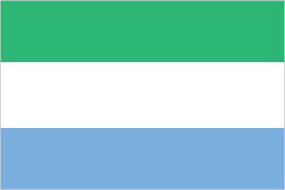
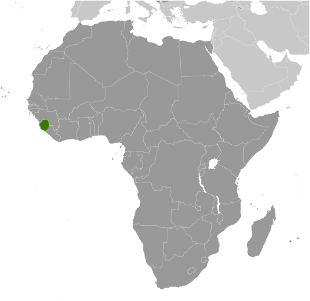
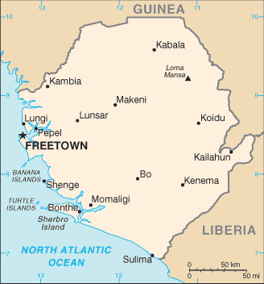

Africa :: SIERRA LEONE
Introduction :: SIERRA LEONE
-
The British set up a trading post near present-day Freetown in the 17th century. Originally the trade involved timber and ivory, but later it expanded into slaves. Following the American Revolution, a colony was established in 1787 and Sierra Leone became a destination for resettling black loyalists who had originally been resettled in Nova Scotia. After the abolition of the slave trade in 1807, British crews delivered thousands of Africans liberated from illegal slave ships to Sierra Leone, particularly Freetown. The colony gradually expanded inland during the course of the 19th century; independence was attained in 1961. Democracy is slowly being reestablished after the civil war (1991-2002) that resulted in tens of thousands of deaths and the displacement of more than 2 million people (about one third of the population). The military, which took over full responsibility for security following the departure of UN peacekeepers at the end of 2005, has developed as a guarantor of the country's stability; the armed forces remained on the sideline during the 2007 and 2012 national elections. In March 2014, the closure of the UN Integrated Peacebuilding Office in Sierra Leone marked the end of more than 15 years of peacekeeping and political operations in Sierra Leone. The government's stated priorities include furthering development - including recovering from the Ebola epidemic - creating jobs, and stamping out endemic corruption.
Geography :: SIERRA LEONE
-
Western Africa, bordering the North Atlantic Ocean, between Guinea and Liberia8 30 N, 11 30 WAfricatotal: 71,740 sq kmland: 71,620 sq kmwater: 120 sq kmcountry comparison to the world: 120slightly smaller than South Carolinatotal: 1,093 kmborder countries (2): Guinea 794 km, Liberia 299 km402 kmterritorial sea: 12 nmcontiguous zone: 24 nmexclusive economic zone: 200 nmcontinental shelf: 200 nmtropical; hot, humid; summer rainy season (May to December); winter dry season (December to April)coastal belt of mangrove swamps, wooded hill country, upland plateau, mountains in eastmean elevation: 279 melevation extremes: lowest point: Atlantic Ocean 0 mhighest point: Loma Mansa (Bintimani) 1,948 mdiamonds, titanium ore, bauxite, iron ore, gold, chromiteagricultural land: 56.2%arable land 23.4%; permanent crops 2.3%; permanent pasture 30.5%forest: 37.5%other: 6.3% (2011 est.)300 sq km (2012)population clusters are found in the lower elevations of the south and west; the northern third of the country is less populateddry, sand-laden harmattan winds blow from the Sahara (December to February); sandstorms, dust stormsrapid population growth pressuring the environment; overharvesting of timber, expansion of cattle grazing, and slash-and-burn agriculture have resulted in deforestation and soil exhaustion; civil war depleted natural resources; overfishingparty to: Biodiversity, Climate Change, Climate Change-Kyoto Protocol, Desertification, Endangered Species, Law of the Sea, Marine Life Conservation, Ozone Layer Protection, Ship Pollution, Wetlandssigned, but not ratified: Environmental Modificationrainfall along the coast can reach 495 cm (195 inches) a year, making it one of the wettest places along coastal, western Africa
People and Society :: SIERRA LEONE
-
6,163,195 (July 2017 est.)country comparison to the world: 109noun: Sierra Leonean(s)adjective: Sierra LeoneanTemne 35%, Mende 31%, Limba 8%, Kono 5%, Kriole 2% (descendants of freed Jamaican slaves who were settled in the Freetown area in the late-18th century; also known as Krio), Mandingo 2%, Loko 2%, other 15% (includes refugees from Liberia's recent civil war, and small numbers of Europeans, Lebanese, Pakistanis, and Indians) (2008 census)English (official, regular use limited to literate minority), Mende (principal vernacular in the south), Temne (principal vernacular in the north), Krio (English-based Creole, spoken by the descendants of freed Jamaican slaves who were settled in the Freetown area, a lingua franca and a first language for 10% of the population but understood by 95%)Muslim 60%, indigenous beliefs 30%, Christian 10%Sierra Leone’s youthful and growing population is driven by its high total fertility rate (TFR) of almost 5 children per woman, which has declined little over the last two decades. Its elevated TFR is sustained by the continued desire for large families, the low level of contraceptive use, and the early start of childbearing. Despite its high TFR, Sierra Leone’s population growth is somewhat tempered by high infant, child, and maternal mortality rates that are among the world’s highest and are a result of poverty, a lack of potable water and sanitation, poor nutrition, limited access to quality health care services, and the prevalence of female genital cutting.Sierra Leone’s large youth cohort – about 60% of the population is under the age of 25 – continues to struggle with high levels of unemployment, which was one of the major causes of the country’s 1991-2002 civil war and remains a threat to stability today. Its estimated 60% youth unemployment rate is attributed to high levels of illiteracy and unskilled labor, a lack of private sector jobs, and low pay.Sierra Leone has been a source of and destination for refugees. Sierra Leone’s civil war internally displaced as many as 2 million people, or almost half the population, and forced almost another half million to seek refuge in neighboring countries (370,000 Sierra Leoneans fled to Guinea and 120,000 to Liberia). The UNHCR has helped almost 180,000 Sierra Leoneans to return home, while more than 90,000 others have repatriated on their own. Of the more than 65,000 Liberians who took refuge in Sierra Leone during their country’s civil war (1989-2003), about 50,000 have been voluntarily repatriated by the UNHCR and others have returned home independently. As of 2015, less than 1,000 Liberians still reside in Sierra Leone.0-14 years: 41.82% (male 1,286,681/female 1,290,924)15-24 years: 18.56% (male 556,478/female 587,454)25-54 years: 32.16% (male 949,264/female 1,032,783)55-64 years: 3.7% (male 106,706/female 121,111)65 years and over: 3.76% (male 96,285/female 135,509) (2017 est.)total dependency ratio: 82.6youth dependency ratio: 78elderly dependency ratio: 4.6potential support ratio: 21.9 (2015 est.)total: 19 yearsmale: 18.4 yearsfemale: 19.6 years (2017 est.)country comparison to the world: 2022.38% (2017 est.)country comparison to the world: 2936.3 births/1,000 population (2017 est.)country comparison to the world: 1510.4 deaths/1,000 population (2017 est.)country comparison to the world: 34-2.1 migrant(s)/1,000 population (2017 est.)country comparison to the world: 165population clusters are found in the lower elevations of the south and west; the northern third of the country is less populatedurban population: 40.7% of total population (2017)rate of urbanization: 2.72% annual rate of change (2015-20 est.)FREETOWN (capital) 1.007 million (2015)at birth: 1.03 male(s)/female0-14 years: 1 male(s)/female15-24 years: 0.94 male(s)/female25-54 years: 0.92 male(s)/female55-64 years: 0.86 male(s)/female65 years and over: 0.73 male(s)/femaletotal population: 0.95 male(s)/female (2016 est.)19.2 yearsnote: median age at first birth among women 25-29 (2013 est.)1,360 deaths/100,000 live births (2015 est.)country comparison to the world: 1total: 68.4 deaths/1,000 live birthsmale: 76.6 deaths/1,000 live birthsfemale: 59.8 deaths/1,000 live births (2017 est.)country comparison to the world: 10total population: 58.6 yearsmale: 56 yearsfemale: 61.3 years (2017 est.)country comparison to the world: 2094.73 children born/woman (2017 est.)country comparison to the world: 2016.6% (2013)11.1% of GDP (2014)country comparison to the world: 130.02 physicians/1,000 population (2010)0.4 beds/1,000 population (2006)improved:urban: 84.9% of populationrural: 47.8% of populationtotal: 62.6% of populationunimproved:urban: 15.1% of populationrural: 52.2% of populationtotal: 37.4% of population (2015 est.)improved:urban: 22.8% of populationrural: 6.9% of populationtotal: 13.3% of populationunimproved:urban: 77.2% of populationrural: 93.1% of populationtotal: 86.7% of population (2015 est.)1.7% (2016 est.)country comparison to the world: 2867,000 (2016 est.)country comparison to the world: 512,800 (2016 est.)country comparison to the world: 46degree of risk: very highfood or waterborne diseases: bacterial and protozoal diarrhea, hepatitis A, and typhoid fevervectorborne diseases: malaria, dengue fever, and yellow feverwater contact disease: schistosomiasisanimal contact disease: rabiesaerosolized dust or soil contact disease: Lassa fever (2016)8.7% (2016)country comparison to the world: 14718.1% (2013)country comparison to the world: 342.7% of GDP (2014)country comparison to the world: 141definition: age 15 and over can read and write English, Mende, Temne, or Arabictotal population: 48.1%male: 58.7%female: 37.7% (2015 est.)
Government :: SIERRA LEONE
-
conventional long form: Republic of Sierra Leoneconventional short form: Sierra Leonelocal long form: Republic of Sierra Leonelocal short form: Sierra Leoneetymology: the Portuguese explorer Pedro de SINTRA named the country "Serra Leoa" (Lion Mountains) for the impressive mountains he saw while sailing the West African coast in 1462presidential republicname: Freetowngeographic coordinates: 8 29 N, 13 14 Wtime difference: UTC 0 (5 hours ahead of Washington, DC, during Standard Time)3 provinces and 1 area*; Eastern, Northern, Southern, Western*27 April 1961 (from the UK)Independence Day, 27 April (1961)history: several previous; latest effective 1 October 1991amendments: proposed by Parliament; passage of amendments requires at least two-thirds majority vote of Parliament in two successive readings and assent by the president of the republic; passage of amendments affecting fundamental rights and freedoms and many other constitutional sections also requires approval in a referendum with participation of at least one-half of qualified voters and at least two-thirds of votes cast; amended several times, last in 2013 (2017)mixed legal system of English common law and customary lawhas not submitted an ICJ jurisdiction declaration; accepts ICCt jurisdictioncitizenship by birth: nocitizenship by descent only: at least one parent or grandparent must be a citizen of Sierra Leonedual citizenship recognized: yesresidency requirement for naturalization: 5 years18 years of age; universalchief of state: President Ernest Bai KOROMA (since 17 September 2007); note - the president is both chief of state and head of governmenthead of government: President Ernest Bai KOROMA (since 17 September 2007)cabinet: Ministers of State appointed by the president, approved by Parliament; the cabinet is responsible to the presidentelections/appointments: president directly elected by absolute majority popular vote in 2 rounds if needed for a 5-year term (eligible for a second term); election last held on 17 November 2012 (next to be on 7 March 2018)election results: Ernest Bai KOROMA reelected president; percent of vote - Ernest Bai KOROMA (APC) 58.7%, Julius Maada BIO (SLPP) 37.4%, other 3.9%description: unicameral Parliament (124 seats; 112 members directly elected in single-seat constituencies by simple majority vote and 12 seats filled in separate elections by non-partisan members of Parliament called "paramount chiefs;" members serve 5-year terms)elections: last held on 17 November 2012 (next to be held on 7 March 2018)election results: percent of vote by party - APC 53.7%, SLPP 38.3%, other 8.0%; seats by party - APC 67, SLPP 42highest court(s): Superior Court of Judicature (consists of the Supreme Court - at the apex - with the chief justice and 4 other judges, the Court of Appeal with the chief justice and 7 other judges, and the High Court of Justice with the chief justice and 9 other judges; note – the Judicature has jurisdiction in all civil, criminal, and constitutional mattersjudge selection and term of office: Supreme Court chief justice and other judges of the Judicature appointed by the president on the advice of the Judicial and Legal Service Commission (a 7-member independent body of judges, presidential appointees, and the Commission chairman) and are subject to the approval of Parliament; all Judicature judges appointed until retirement at age 65subordinate courts: magistrates' courts; District Appeals Court; local courtsAll People's Congress or APC [Ernest Bai KOROMA]Sierra Leone People's Party or SLPP [Sumanoh KAPEN]numerous other partiesstudent unions; trade unionsACP, AfDB, AU, C, ECOWAS, EITI (compliant country), FAO, G-77, IAEA, IBRD, ICAO, ICCt, ICRM, IDA, IDB, IFAD, IFC, IFRCS, IHO (pending member), ILO, IMF, IMO, Interpol, IOC, IOM, IPU, ISO (correspondent), ITU, ITUC (NGOs), MIGA, MINUSMA, NAM, OIC, OPCW, UN, UNAMID, UNCTAD, UNESCO, UNIDO, UNIFIL, UNISFA, UNWTO, UPU, WCO, WFTU (NGOs), WHO, WIPO, WMO, WTOchief of mission: Ambassador Bockari Kortu STEVENS (since 4 April 2008)chancery: 1701 19th Street NW, Washington, DC 20009telephone: [1] (202) 939-9261 through 9263FAX: [1] (202) 483-1793chief of mission: Ambassador Maria E. BREWER (since 20 December 2017)embassy: Southridge-Hill Station, Freetownmailing address: use embassy street addresstelephone: [232] 99 1055 00FAX: [232] 99 515 355three equal horizontal bands of light green (top), white, and light blue; green symbolizes agriculture, mountains, and natural resources, white represents unity and justice, and blue the sea and the natural harbor in Freetownlion; national colors: green, white, bluename: "High We Exalt Thee, Realm of the Free"lyrics/music: Clifford Nelson FYLE/John Joseph AKAnote: adopted 1961
Economy :: SIERRA LEONE
-
Sierra Leone is extremely poor and nearly half of the working-age population engages in subsistence agriculture. The country possesses substantial mineral, agricultural, and fishery resources, but it is still recovering from a civil war that destroyed most institutions before ending in the early 2000s.In recent years, economic growth has been driven by mining - particularly iron ore. The country’s principal exports are iron ore, diamonds, and rutile, and the economy is vulnerable to fluctuations in international prices. Until 2014, the government had relied on external assistance to support its budget, but it was gradually becoming more independent. The Ebola outbreak of 2014 and 2015, combined with falling global commodities prices, caused a significant contraction of economic activity in all areas. While the World Health Organization declared an end to the Ebola outbreak in Sierra Leone in November 2015, low commodity prices in 2015-2016 contributed to the country’s biggest fiscal shortfall since 2001. In 2017, increased iron ore exports are expected to support modest economic growth. Non-mining activities will remain constrained by inadequate infrastructure, such as power and roads, even though power sector projects may provide some additional electricity capacity in the near term.Continued economic growth will depend on rising commodities prices and increased efforts to diversify the sources of growth. Pervasive corruption and undeveloped human capital will continue to deter foreign investors. Sustained international donor support in the near future will partially offset these fiscal constraints.$10.9 billion (2016 est.)$10.14 billion (2015 est.)$12.62 billion (2014 est.)note: data are in 2016 dollarscountry comparison to the world: 157$3.716 billion (2016 est.)6.1% (2016 est.)-20.5% (2015 est.)4.6% (2014 est.)country comparison to the world: 41$1,700 (2016 est.)$1,600 (2015 est.)$2,100 (2014 est.)note: data are in 2016 dollarscountry comparison to the world: 212-9.3% of GDP (2016 est.)-5.9% of GDP (2015 est.)-7.2% of GDP (2014 est.)country comparison to the world: 177household consumption: 102.2%government consumption: 10.4%investment in fixed capital: 16.8%investment in inventories: 1%exports of goods and services: 23.5%imports of goods and services: -53.9% (2016 est.)agriculture: 61.4%industry: 5.9%services: 32.7% (2016 est.)rice, coffee, cocoa, palm kernels, palm oil, peanuts, cashews; poultry, cattle, sheep, pigs; fishdiamond mining; iron ore, rutile and bauxite mining; small-scale manufacturing (beverages, textiles, footwear)26.2% (2016 est.)country comparison to the world: 12.863 million (2016 est.)country comparison to the world: 106agriculture: 61.1%industry: 5.5%services: 33.4% (2014 est.)9.1% (2014 est.)country comparison to the world: 11870.2% (2004 est.)lowest 10%: 2.6%highest 10%: 33.6% (2003)34 (2011)62.9 (1989)country comparison to the world: 101revenues: $574.7 millionexpenditures: $877.4 million (2016 est.)14.4% of GDP (2016 est.)country comparison to the world: 195-7.6% of GDP (2016 est.)country comparison to the world: 19054.9% of GDP (2016 est.)45.7% of GDP (2015 est.)country comparison to the world: 86calendar year11.5% (2016 est.)6.7% (2015 est.)country comparison to the world: 204NA%18% (31 December 2016 est.)18.73% (31 December 2015 est.)country comparison to the world: 21$381.8 million (31 December 2016 est.)$457.4 million (31 December 2015 est.)country comparison to the world: 171$847.2 million (31 December 2016 est.)$917.2 million (31 December 2015 est.)country comparison to the world: 174$527.6 million (31 December 2016 est.)$569.4 million (31 December 2015 est.)country comparison to the world: 175$NA$-733 million (2016 est.)$-744.8 million (2015 est.)country comparison to the world: 111$670 million (2016 est.)$581 million (2015 est.)country comparison to the world: 168iron ore, diamonds, rutile, cocoa, coffee, fishCote dIvoire 31.7%, US 28.3%, Belgium 17.7%, China 6.6% (2016)$1.316 billion (2016 est.)$1.347 billion (2015 est.)country comparison to the world: 172foodstuffs, machinery and equipment, fuels and lubricants, chemicalsChina 12.5%, US 9.7%, India 7.8%, UAE 7.2%, Senegal 6.2%, Belgium 5.5%, Turkey 5.5%, UK 4.7% (2016)$1.503 billion (31 December 2016 est.)$1.378 billion (31 December 2015 est.)country comparison to the world: 158$1.832 billion (31 December 2016 est.)$1.499 billion (31 December 2015 est.)country comparison to the world: 115$9.7 million (31 December 2015 est.)$6.7 million (31 December 2014 est.)country comparison to the world: 110leones (SLL) per US dollar -6,289.9 (2016 est.)6,289.9 (2015 est.)5,080.8 (2014 est.)4,524.2 (2013 est.)4,344 (2012 est.)
Energy :: SIERRA LEONE
-
population without electricity: 5,800,000electrification - total population: 5%electrification - urban areas: 11%electrification - rural areas: 1% (2013)175 million kWh (2015 est.)country comparison to the world: 192162.8 million kWh (2015 est.)country comparison to the world: 1940 kWh (2016 est.)country comparison to the world: 1960 kWh (2016 est.)country comparison to the world: 20081,000 kW (2015 est.)country comparison to the world: 18333.3% of total installed capacity (2015 est.)country comparison to the world: 1820% of total installed capacity (2015 est.)country comparison to the world: 18166.7% of total installed capacity (2015 est.)country comparison to the world: 200% of total installed capacity (2015 est.)country comparison to the world: 2040 bbl/day (2016 est.)country comparison to the world: 1930 bbl/day (2014 est.)country comparison to the world: 1900 bbl/day (2014 est.)country comparison to the world: 1890 bbl (1 January 2017 es)country comparison to the world: 1920 bbl/day (2014 est.)country comparison to the world: 1977,500 bbl/day (2015 est.)country comparison to the world: 1640 bbl/day (2014 est.)country comparison to the world: 1977,354 bbl/day (2014 est.)country comparison to the world: 1510 cu m (2013 est.)country comparison to the world: 1930 cu m (2013 est.)country comparison to the world: 1300 cu m (2013 est.)country comparison to the world: 1820 cu m (2013 est.)country comparison to the world: 1870 cu m (1 January 2014 es)country comparison to the world: 1941.4 million Mt (2013 est.)country comparison to the world: 159
Communications :: SIERRA LEONE
-
total subscriptions: 17,000subscriptions per 100 inhabitants: less than 1 (July 2016 est.)country comparison to the world: 192total: 6,279,270subscriptions per 100 inhabitants: 104 (July 2016 est.)country comparison to the world: 120general assessment: telephone service improving with the expansion of the mobile sectordomestic: the national microwave radio relay trunk system connects Freetown to Bo and Kenema; mobile-cellular service has grown rapidly from a small base, overcoming the deficiencies of the fixed-line sectorinternational: country code - 232; satellite earth station - 1 Intelsat (Atlantic Ocean) (2016)1 government-owned TV station; 3 private TV stations; a pay-TV service began operations in late 2007; 1 government-owned national radio station; about two-dozen private radio stations primarily clustered in major cities; transmissions of several international broadcasters are available (2016).sltotal: 708,615percent of population: 11.8% (July 2016 est.)country comparison to the world: 173
Transportation :: SIERRA LEONE
-
number of registered air carriers:inventory of registered aircraft operated by air carriers:annual passenger traffic on registered air carriers: 50,193annual freight traffic on registered air carriers: 0 mt-km (2015)9L (2016)8 (2013)country comparison to the world: 164total: 1over 3,047 m: 1 (2017)total: 7914 to 1,523 m: 7 (2013)2 (2013)total: 11,300 kmpaved: 904 kmunpaved: 10,396 km (2002)country comparison to the world: 131800 km (600 km navigable year-round) (2011)country comparison to the world: 71total: 215by type: bulk carrier 22, cargo 120, carrier 2, chemical tanker 19, container 6, liquefied gas 3, passenger/cargo 2, petroleum tanker 28, refrigerated cargo 7, roll on/roll off 4, specialized tanker 1, vehicle carrier 1foreign-owned: 98 (Bangladesh 1, China 19, Cyprus 2, Egypt 3, Estonia 2, Hong Kong 7, Japan 4, Lebanon 2, North Korea 2, Romania 2, Russia 7, Singapore 9, Syria 13, Taiwan 7, Turkey 9, UAE 1, UK 1, Ukraine 5, Yemen 2) (2010)country comparison to the world: 34major seaport(s): Freetown, Pepel, Sherbro Islands
Military and Security :: SIERRA LEONE
-
0.81% of GDP (2016)0.92% of GDP (2015)0.97% of GDP (2014)0.64% of GDP (2013)0.78% of GDP (2012)country comparison to the world: 118Republic of Sierra Leone Armed Forces (RSLAF): Army (includes Maritime Wing and Air Wing) (2013)18 is the legal minimum age for voluntary military service (younger with parental consent); women are eligible to serve; no conscription; candidates must be HIV negative (2012)
Transnational Issues :: SIERRA LEONE
-
Sierra Leone opposes Guinean troops' continued occupation of Yenga, a small village on the Makona River that serves as a border with Guinea; Guinea's forces came to Yenga in the mid-1990s to help the Sierra Leonean military to suppress rebels and to secure their common border but have remained there even after both countries signed a 2005 agreement acknowledging that Yenga belonged to Sierra Leone; in 2012, the two sides signed a declaration to demilitarize the area